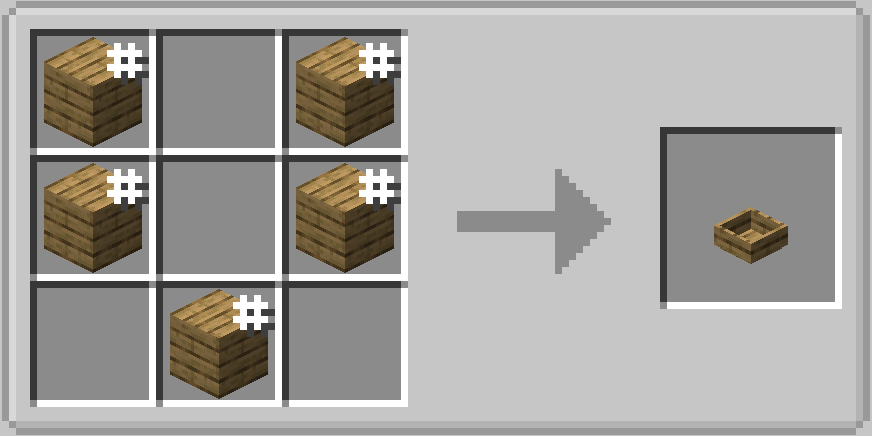

The Mixing Bowl can make all sorts of tasty things! It can take multiple fluids and up to 9 ingredients, and requires either a Spoon or a Whisk to stir it with.
Usage
Put ingredients into the grid and/or fluid tank, and hold right-click with the required utensil on the Mixing Bowl until your item is created! An Offset Spatula can be used to change its cosmetic appearance.
Also if you right click on it with an Egg you will separate it into an Egg Yolk (kept in your hand) and some Egg White (in the Mixing Bowl fluid tank).
Crafting

Hashtag (#) denotes that any kind can be used, ex. any kind of plank.
Added in
1.0
Used to make
(click to expand)
- Aioli
- Alfredo Pasta
- Apple Slaw
- Beet Mint Salad
- Butter
- Buttered Pasta
- Cactus Salad
- Candy Bar Salad
- Carrot Salad
- Chef Salad Feast
- Chicken Alfredo Pasta
- Chocolate Nut Butter Spread
- Citrus, Onion, and Mint Salad
- Coffee Jelly
- Cookie Doughs
- Cucumber Salad
- Dalgona Coffee
- Egg Mix
- Egg Salad
- Egg Whites Beaten to Stiff Peaks
- Eton Mess
- Fish Salad
- Frostings
- Furikake
- Gazpacho
- Grapefruit and Beetroot Salad
- Gummies
- Hot Wings
- Lemonade
- Limeade
- Liquid Blood Chocolate
- Liquid Dark Chocolate
- Liquid Milk Chocolate
- Liquid White Chocolate
- Marshmallow
- Mayo
- Melon Fruit Salad
- Melon Gazpacho
- Milkshakes
- Morkovcha
- Nougat
- Orangeade
- Pasta with Meatballs (from Farmer's Delight)
- Pasta with Mutton Chop (from Farmer's Delight)
- Potato Salad
- Pulled Pork
- Salami Mix
- Seaweed Salad
- Shirazi Salad
- Spaghetti Aglio e Olio
- Thai Melon Salad
- Tomato Pasta
- Wheat Dough (from Farmer's Delight)
- Whipped Cream